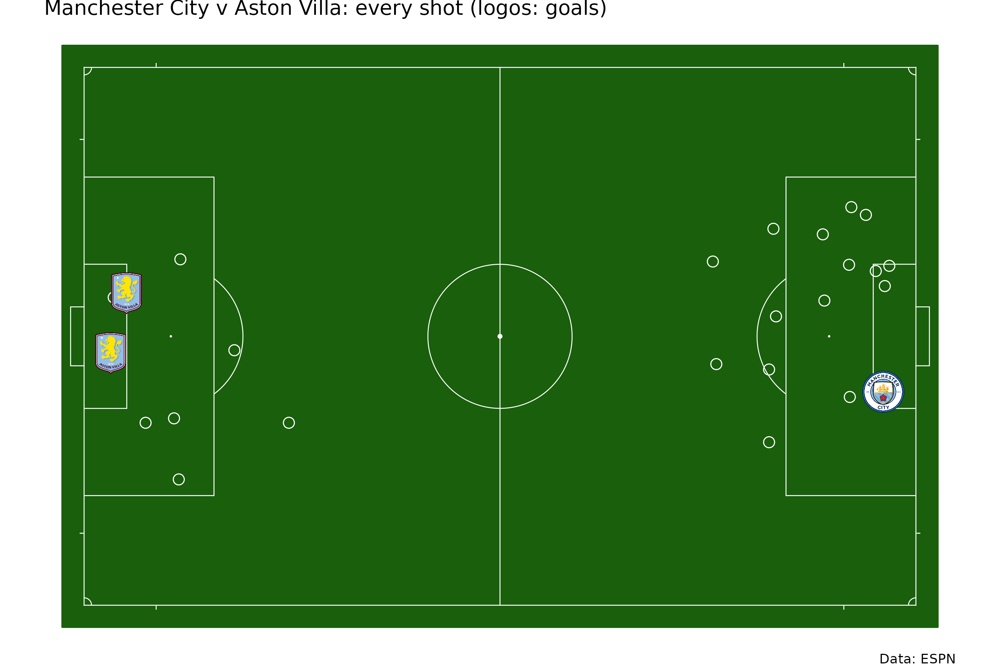
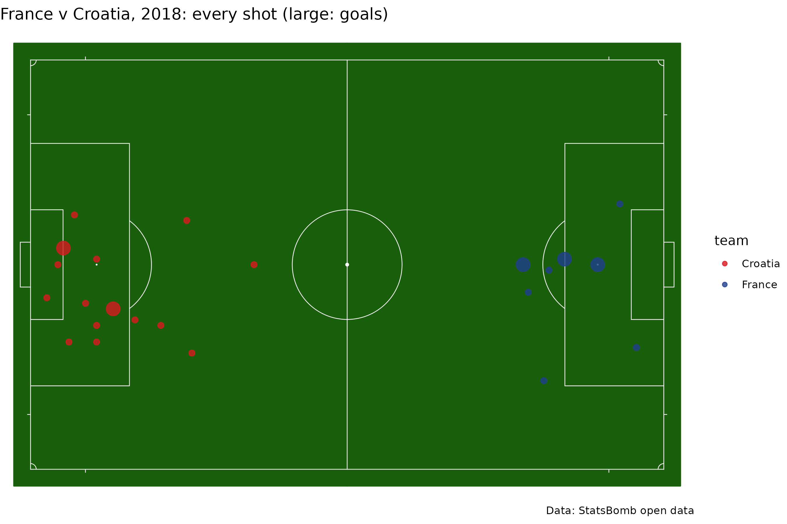
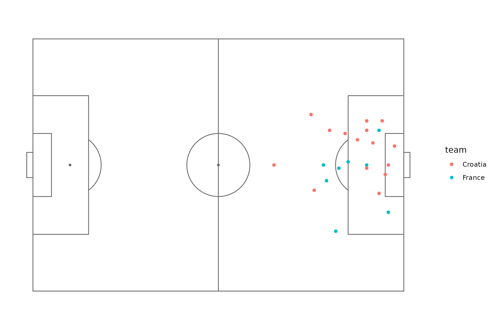
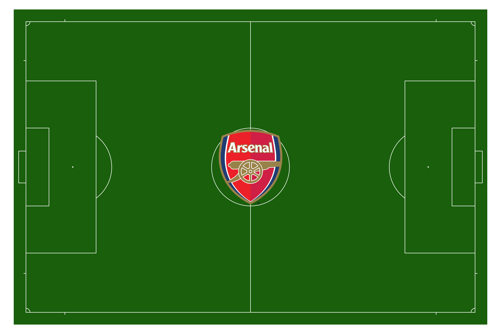

On this page
sdv_pitch_coords() converts soccer event coordinates
from any major provider to one frame: meters from the center spot of a
regulation 105 x 68 m pitch, attacking toward +x, with +y on the
attacker’s left. sdv_surface("soccer") draws that
pitch.
ESPN: the Premier League’s final day of 2025-26
ESPN’s play-by-play (the same feed sportsdataverse-py’s
espn_soccer_game_plays() reads) records each shot’s
distance from the goal it attacks as a fraction of half the pitch.
Manchester City (ESPN id 382) against Aston Villa (362); the away team’s
shots are flipped so the two sides attack opposite ends.
url <- paste0(
"https://sports.core.api.espn.com/v2/sports/soccer/leagues/eng.1/events/740970/",
"competitions/740970/plays?limit=1000"
)
items <- jsonlite::fromJSON(url)$items
plays <- data.frame(
type = items$type$text,
field_position_x = items$fieldPositionX,
field_position_y = items$fieldPositionY,
team = sub(".*/teams/([0-9]+).*", "\\1", items$team$`$ref`),
goal = items$scoringPlay
)
shots <- plays[grepl("shot|goal", plays$type, ignore.case = TRUE) & plays$type != "Assists Shot", ]
shots <- sdv_pitch_coords(transform(shots, away = team != "382"), "espn", flip = "away")
shots <- shots[!is.na(shots$pitch_x), ]
sdv_surface("soccer") +
geom_point(aes(pitch_x, pitch_y), data = shots[!shots$goal, ], shape = 21, size = 3, fill = NA, color = "white") +
geom_sdv_logos(aes(pitch_x, pitch_y, team = team), data = shots[shots$goal, ], sport = "soccer", width = 0.05) +
labs(title = "Manchester City v Aston Villa: every shot (logos: goals)", caption = "Data: ESPN")
StatsBomb: the 2018 World Cup final
The same function reads StatsBomb’s 120 x 80 frame. StatsBomb open data is free for non-commercial use.
events <- jsonlite::fromJSON(
"https://raw.githubusercontent.com/statsbomb/open-data/master/data/events/8658.json",
simplifyDataFrame = FALSE
)
shots_sb <- do.call(rbind, lapply(Filter(function(e) e$type$name == "Shot", events), function(e) {
data.frame(team = e$team$name, x = e$location[[1]], y = e$location[[2]], goal = e$shot$outcome$name == "Goal")
}))
shots_sb <- sdv_pitch_coords(transform(shots_sb, croatia = team == "Croatia"), "statsbomb", flip = "croatia")
sdv_surface("soccer") +
geom_point(aes(pitch_x, pitch_y, color = team, size = goal), data = shots_sb, alpha = 0.8) +
scale_color_manual(values = c(France = "#1f3f8f", Croatia = "#d71920")) +
scale_size_manual(values = c(`FALSE` = 2, `TRUE` = 5), guide = "none") +
labs(title = "France v Croatia, 2018: every shot (large: goals)", caption = "Data: StatsBomb open data")
In the provider’s own frame, with ggsoccer
To keep a provider’s frame instead, ggsoccer draws its pitch; StatsBomb’s y runs top to bottom, hence the reversed scale.
raw_sb <- shots_sb[c("team", "x", "y", "goal")]
ggplot(raw_sb, aes(x, y, color = team)) +
ggsoccer::annotate_pitch(dimensions = ggsoccer::pitch_statsbomb) +
geom_point() +
scale_y_reverse() +
ggsoccer::theme_pitch()
#> Scale for y is already present.
#> Adding another scale for y, which will replace the existing scale.
Club colors and the center logo
sdv_team_colors("soccer", c("359", "382", "18418"))
#> 359 382 18418
#> "#E20520" "#99C5EA" "#9D2235"
sdv_surface("soccer", "359", center_logo = TRUE)